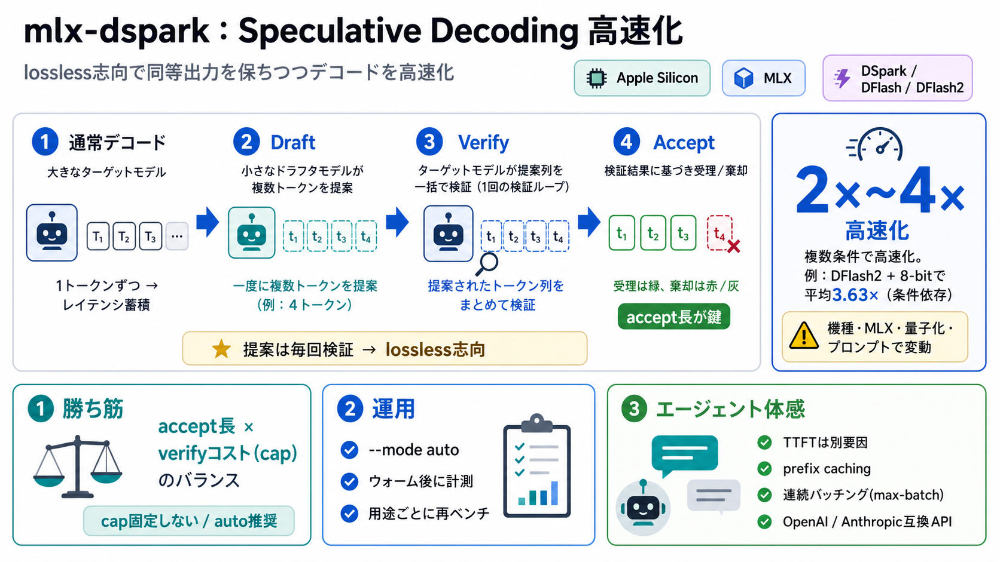

通常
ターゲット（本体モデル）が毎トークンを計算して確定。

Apple Siliconで高速化
speculative decoding（スペキュレイティブ・デコーディング）を、DSpark / DFlash / DFlash2 で実装し、lossless（同等出力）を保ちつつ推論デコードを高速化する取り組みです。
EN用語は原則英語のまま併記し、日本語の要点を短く添えています。
逐次デコードの壁
通常のLLMは「次トークン」を1つずつ逐次計算し、生成が伸びるほど待ち時間（レイテンシ）が蓄積します。
ターゲット（本体モデル）が毎トークンを計算して確定。
デコード回数がそのまま増え、GPU/MLXの計算が支配的。
下書き→検証
ドラフタ（下書き役）が複数トークンを先に提案し、ターゲットが提案をまとめて検証することで、合致分だけ逐次計算を節約します（lossless設計）。
ドラフタが複数トークンを提案。
ターゲットが同一の提案列を検証。
一致した分だけ受理（accept長が鍵）。
mlx-dsparkの中核
重要なのは「提案を検証する1つの検証ループ」で処理する設計で、合致（accept）が長いほど高速化率が上がります。
提案トークンを“毎回検証”し、通常デコードと同等（基本的に同一出力）を狙う。
accept × 検証コスト（cap）のバランスで決まる。
DSpark vs DFlash系
単純に「常に速い」ではなく、検証幅（cap）、MLXの検証カーネル挙動、モデル構造、量子化などで相性が変わります。
accept長（受理）と、verifyの計算コスト（cap）がトレードオフ。
Qwen3.8-27BでDFlash2採用が有利になり、速度面の優位が示される。
ベンチの要点
複数モデルで概ね 2倍〜4倍 の速度向上が示され、条件によって大きく伸びる例が報告されています。
DFlash2により8-bitで平均 3.63×、数値条件付きで最大級の改善。
同一検証幅で受理が高くなり、結果として逐次デコード削減が効く。
注：数値は特定条件（機種・MLX・プロンプト/キャッシュ状況）に依存します。
運用の勘所
READMEでは --mode auto を推奨し、ターゲットモデルごとに計測済みの最適ペア選択で無駄なフラグ調整を避けます。
--mode auto
自動で最適化。
A/B
目的がある場合だけ明示指定。
optimumは環境依存。
cap（検証幅）
--max-draft（cap相当）を固定せず、auto/計測ベースにするのが実務的です。
最適capが M1/M4、MLXバージョン、量子化で変わるため。
固定すると、verifyコストが勝って速度低下になる可能性。
最初の数秒の計測（cached/ウォーム）を活用。
TTFTは別の支配因子
Claude Codeのようなエージェント用途では、デコード速度よりも prefix caching（プレフィックス再利用）やプレフィル削減が支配的になりやすいです。
Time To First Token：初トークンまでが遅いと体感が悪化。
会話履歴の再利用（prefix caching）＋ 連続バッチング（max-batch）。
API互換で広がる
単なるCLI実行だけでなく、OpenAI互換／Anthropic互換のローカルAPIサーバとして提供され、ローカルクライアントやエージェントに接続できます。
LM Studio / 各種ローカルクライアント
Claude Code のようなエージェント
応答性（体感速度）を底上げ
どれだけ速く感じるかは、クライアント側プロンプト設計にも左右されます。
注意点（落とし穴）
最適設定は環境依存です。量子化・検証幅・MLXバージョン・モデル構造（MoE/ハイブリッド等）で結果が変わります。
MLX version、量子化（4bit/8bit等）、context/KV制約の影響。
コミュニティのドラフタは品質ばらつきがあり、accept分布が変動。
ベンチマークとキャリブレーション（auto計測）が前提。
まとめ
mlx-dsparkは speculative decoding を lossless志向で運用し、accept長が伸びる設定（auto・cap非固定）と、prefix caching/バッチで体感を改善します。
--mode auto ＋ ウォーム後に計測（cached前提）。
環境差が大きいので、用途（chat/code/agent）ごとに再ベンチ。
EN/JP対訳：speculative decoding（先読み検証型デコード）／accept（受理長）／prefix caching（前方文脈再利用）。
No references found